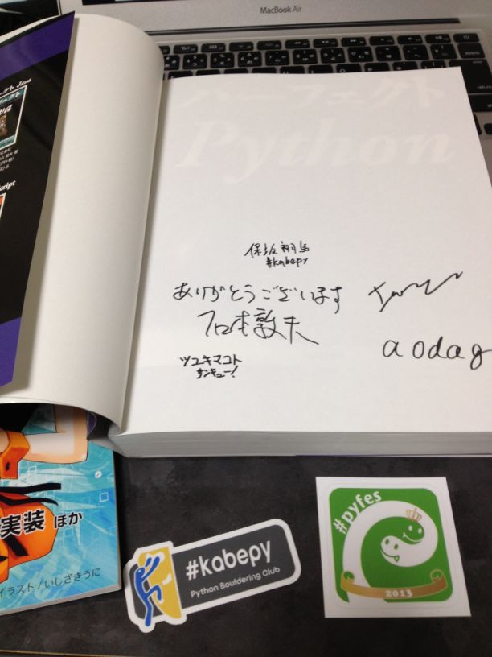

TinkererでBlogを書こう(Ver1.2)¶
昨年末 Sphinx Advent Calendar 2012 - connpass で Tinkererでブログを書こう — kashew_nuts-blog という記事を書きましたが、 Tinkerer も Version が1.2になり、運用方法も記事を書いた時と変わってきたので、改めて書き直してみます。
Tinkererとは¶
Tinkerer とはSphinxを使った Blog 作成ツールです。 Sphinx Advent Calendar 2012 (全部俺) の @usaturn さんや、 Sphinx Advent Calendar 2012 主催の @r_rudi さんもTinkererを使用しています。今回はそのTinkererについて導入から実際に公開するまでの一連の流れを紹介してみたいと思います。
bitbucketの準備¶
bitbucketに以下の名前でリポジトリ作成
<username>.bitbucket.org (private レポジトリ)
Note
<username>には_(アンダーバー)などの記号を含まないほうが無難です。記号が含まれていた場合、Twitterのような外部サービスと連携したい時に問題が発生することがあります。私のアカウント名は通常 kashew_nuts を使用していますが、そのままのアカウントで作成すると、Tweetボタンで Blog のURLが作成されず困りました。
初期設定¶
以下のようにすると Blog を書くのに必要なファイル類ができあがります。
$ pip install tinkerer # Tinkererのインストール
$ mkdir myblog
$ cd myblog
$ tinkerer -s # Tinkererの初期セットアップ
次に Blog のタイトルやあなたの名前を登録しましょう。 お好きなエディタで conf.py を編集します。 私は普段 Vim を使用しているので Vim で書きます。 シンタックスハイライトが特別な設定なしで使えるため非常に便利です。
$ vim conf.py
例として以下に私が設定している conf.py を上げたいと思います。 ‘’でくくられている箇所をお好きな内容に変えて設定して下さい。
# Change this to the name of your blog
project = 'kashew_nuts-blog'
# Change this to the tagline of your blog
tagline = 'Load To Pythonista'
# Change this to your name
author = 'Kashun YOSHIDA'
# Change this to your copyright string
copyright = '2011-2013, ' + author
# Change this to your blog root URL (required for RSS feed)
website = 'http://kashewnuts.github.io/'
これで、Tinkererで Blog を書く初期設定は終了です。
Blog を書こう¶
$ tinkerer -p "first post" # 記事の下書き作成
$ vim 2013/06/16/first_post.rst # 記事の作成
$ tinkerer -b # 記事のHTMLを作成
これで、blog/html/ 以下に記事が作成されます。 どんな記事が作成されたのか、以下のコマンドを打って確認してみましょう。
$ python -m SimpleHTTPServer
ネットワーク受信接続の許可を求められますので、 許可 を選択して下さい。ブラウザのロケーションバーに http://127.0.0.1:8000 とタイプすると、あなたが作成した記事を確認することができます。
Note
SimpleHTTPSererのデフォルトのポート番号は8000ですが、以下のように記述するとポート番号を指定できます。この例ではポート番号を8080に設定しています。
$ python -m SimpleHTTPServer 8080
Blog を公開しよう¶
いくつかあるようですが、ここは私が実際に使用している方法を紹介したいと思います。 初めに準備した bitbucket リポジトリに以下の内容を上げてしまいましょう。
前回書いた記事 では index.html と blog/ 以下全てと書きましたが、 これだと Blog を開いた時に、http://hogehoge.bitbucket.io/blog/html/index.html と長ったらしいURLになってしまいます。
そこで今回は “blog/html/ 以下全て” の生成物を上げます。
Warning
くれぐれも以下の操作を blog/html/ 以下で行わないで下さい。Tinkerer は “tinker -b” で ファイルを生成するたびにファイルを全て新しく作り直すので、Mercurial の管理情報が消え、 新しい記事を挙げることができなくなります！
これを一番シンプルな方法は、”tinker -b” で生成した “blog/html/” 以下の生成物を myblog とは別のディレクトリで管理することです。
Mercurial を使用した方法を記述します。
# Blog 管理用ディレクトリの準備
$ mkdir public
$ cp -R blog/html/ public/. # スクリプト化すると便利です。
$ cd public
# Mercurial 初期設定
$ hg init
$ vim .hg/hgrc
[paths]
default=ssh://hg@bitbucket.io/<username>/<username>.bitbucket.org
# Blog にpush
$ hg add .
$ hg commit -m "first post"
$ hg push
公開されるまでに数分程度待つかもしれません。数分後 https://<username>.bitbucket.io にアクセスすると、 Blog ページが表示できるようになります。
Python Developers Festa2013.03に参加しました #pyfes¶
Python Developers Festa2013.03に参加しました 当日は大きく分けて
ハンズオン、野良ハンズオン
発表(プレゼン、LT)
が行われました。
既にBlogにまとめられている方がいて二の足を踏んでしまった感じですが、自分の中で恒例になってしまっているのでつらつらと書いてみます。
あ、ちなみに今回はまだTogetterまとめが作成されていないようですので、今のうちにまとめた方はヒーローになれると思いますよ:D
前回の様子 Python Developers Festa 2012.11に参加しました。 #pyfes — kashew_nuts-blog
(2013/03/20 追記)ヒーロー現る。
Python Developers Festa 2013.03 #PyFes . - Togetter
その他スライド資料・参加者Blogを追加しました。
{kind=link}
午前中〜プレゼン開始まで¶
急遽開催された @tk0miya さんによるChefハンズオン(座談会？)に参加しました。みんながみんな ネットワーク環境があるわけではない＆資料なしだったので、Chefってどうゆうもの？というところ から始まり、こうゆう風にすればChef使って幸せに近づけるよというお話までしました。
その後お昼をはさみ、プレゼンが始まるまでにパーフェクトPythonの著者サイン会が行われました。 当日のじゃんけん大会でパーフェクトPythonを勝ち取った人も並んでましたね。自分も貰って来まし た。サインくださった方々ありがとうございました。
{kind=link}
また、 #kabepy ステッカー、2013年限定 #pyfes ステッカーも頂きましたよ
発表(プレゼン, LT)¶
15:00過ぎから開始。全体的に順調に進んだ気がします。19:00くらいには終了。
@inoshiro #kabepy の紹介¶
スライド: Introduction of kabepy
kabepyとは何か？
ボルダリング→壁を登るスポーツ
なぜPython ボルダリングクラブか？→理由は特にない。
Pythonと言う名のボルダリングシューズがある。
ロープクライミングのロープの名前がPython
2011/12/22発足 Python ボルダリング部 - connpass
ステッカー作りました。Tシャツ今月末までに出来る予定。
お手軽。ジムが多い。楽しい。
kabepyサポーターズ #kabepy Advent Calendar - connpass
@ryu22e PyCon APAC 2013 開催のお知らせ¶
Python APACとは
今年のテーマは「The year of Python」12年に1度にふさわしい
8月末〜9月中頃を予定
スタッフになりたい人はGoogle Googleで手を上げてみて下さい！
@ymotongpoo Go言語の何か (仮)¶
スライド: 20130316 プログラミング言語Go
プログラミング言語Goのご提案
細かい文法を知りたい人は チュートリアルやってみてね。 A Tour of Go
更に詳しい資料はスライドシェアで。 20130228 Goノススメ（BPStudy #66）
圧倒的現代感！
豊富な標準パッケージ Packages - The Go Programming Language
@torufurukawa Python の Test/Mock (仮)¶
スライド: Mock and patch
Mockとpatch
エンジニア足りません。
モックモジュールPython3.3は標準ライブラリに同梱 unittest.mock
より詳しい話は公式ドキュメントやVさん、ぁっぉさんの資料を見て下さい。
@tokoroten MS Surfaceでゲームを作った話¶
「Surface買った人！」「しーん……」
「静電容量方式は滅びますぞ！」
ゲームを作りましょう。
強化人間専用ゲーム鋭意製作中
@hagino3000 Leap Motion¶
手の認識に特化したモーションキャプチャデバイス
世紀凱旋センサー、接続はUSBもインターフェース
高分解能(0.01mm)、早い(Over60FPS)、安い！
秘密はSoftware(algorithm)にあるらしいが、それっぽい特許,論文見当たらず。
HOW TO GET: 88.98USD(送料込み) 5/13以降発行。開発者登録なら1つ無料。
HOW TO develop: windows7or8, MaxOS10.6 or later、C++,C#,Obj-C,Python等
何がおいしいのかが問題→みんなまだ手探り状態。
@nonNoise Arduino+Pythonハッキングの宣伝¶
来週の24, 24日にやるのできてね！
PythonでArduinoから受け取ったデータをどう操作するか。
もう4回くらい実施している。大体20〜30人くらい集まる。
次回はハードウェアの見ている世界と、PC、WEBが見ている世界のお話。
1day Hacking
@r_rudi Tinkerer¶
今日のお題「Tinkerer」SphinxをベースにしたBlogの作成ツール
Sphinxとは、ドキュメント作成ツール。Pythonの公式ドキュメントにも使われている。
コードハイライトが綺麗。pygmentsというのを使用しています。
どういう意味？→「MG」鍛冶屋, 修繕屋、読み方は？→「てぃんからー」
欠点
コマンドラインでしか叩けない。テキストエディタが必要→ブラウザからとかできない。
記事が多くなるとbuildに時間がかかる。→カテゴリーやRSSなどがあるため。
ホスティング方法
レンタルサーバー、VPS しろうさんが実施している。blog/html/以下を全てコピる。
github, bitbucket 独自ドメインも可能。
S3+ Web hostting MercurialやSphinxもこの方法でやっている。(やろうと思っている)しかし転送料でお金かかる
Dropbox 金額がかからないが、独自ドメインが使えない。→dropbproxというGAEで動くproxy
おまけ: Amazonで出版とか
@keikubo WebPay¶
プロ仕込みのプレゼン
開発者向けの決済サービス
FluxFlex: 1分で使えるホスティング→昨年の6月ぐらいに閉鎖
Rackhub: 10秒で使えるVPS→競争激しいですけど使ってみて下さい。
WebPay: 1時間で使えるクレカ決済
pip install stripe
多種多様な言語、プラットフォームへの対応 Ruby, Python, PHP, iOS, Android, Windows8
湧き上がる「素晴らしい」のコメントの嵐
{kind=link}
@voluntas Webmachine ノススメ¶
資料: Webmachine のススメ
gistプレゼン。レアです。
RESTツールキット。chefのホスティングで使われている。 ちなみにchefはRubyからアーランに変えてメモリ使用量が21GB→600MBになった。
{kind=link}
@lab1092 Blender¶
スライド: 20130316 blender
Blenderイベントの宣伝 春だ一番！Blender祭り 3/23 横浜で開催します。
どんなイベント？→Blenderに限らず、デザインとクラウンドファウンディング視点で。
「2013年Blenderの本格的な浸透」
@2jhari (痛い目にあいたい人LT枠) Webサービスにどれほどの金銭的価値があるのか¶
痛い人枠 #kazepy #しみたん
インターネットサービスと経済学
HOW MUCH VALUE?
細かい所はどうでもいいんじゃい！
@drillbits fabric¶
スライド: Fabric Python Developers Festa 2013.03 #pyfes // Speaker Deck
fablic ネジ、DB
CUI, Application Deployment
インストール、設定、起動→これをSSHでやる
@tk0miya 春を先取り！OpsWorks と Chef ではじめる恋色コーデ術！¶
環境構築を自動化。オレオレ環境の撲滅。リリース後の土下座を減らす。
そうだ、chef使おう。
冪等性(べきとうせい)→あるべき姿を定義しておくと、何度chefを実行しても同じ結果になる。
Community Cookbooks→大抵のツール向けの設定が集約。再利用の精神。
Opscode Community でいろんな人が書いたCookbookを紹介している。世の中には書きましょうという記事が多いが、こちらを使ったほうがお得。今800ぐらいのCookbookがある（重複はあると思うが）
chefの種類: chef server, chef-solo, ホスティング。サーバーが20台ぐらいまでならchef soloでいいらしい。
ちょいツール
vagrant(ベイグラント)って読むらしい。最近AWSやVMWare Fusionにも対応
librarian Cookbook管理ツール。依存性解決とDL
attribute json形式。各Cookbook用の設定。
参考ドキュメント: 公式ドキュメント, naoyaさんによる 書籍 、 Blog 、 RyuzeeさんのBlog 、 @tk0miyaさんのBlog
OpsWorks
AWSのアプリ管理ツール。環境構築、アプリのデプロイ、インスタンスの起動、終了 管理。
Rails, PHP, node.jsアプリをサポート
ハマリまくりです。
@hiroki_ninuma 未定¶
メモは取ったけどここでは書かない。
@moriyoshi 未定¶
MessagePack
Isuue #121
cabo インターネットドラフトを提出した。
AnyPack Builder作りました。ソースはその内githubにあげておきます。 moriyoshi/anypackbuilder - GitHub
懇談会¶
Pyfesが終わった後の、有志での懇談会。何だかあっという間にすぎてました。 @aodag 先生のまさかりが飛びまくってたような気がします。楽しかったですね。
終わりに¶
また参加できてよかった。普段Pyfesに参加してると、無限コーヒー、電源、無線LAN完備、広いスペースなどこれ以上ないと思えるくらいのものが用意されています。今回はトラブルで会場の無線LANが終始使えないというトラブルがありましたが、もとはOracleさんを始め、コミュニティのみなさんのご好意によってなりたっているのだよなと思い起こさせる日になりました。また次回参加できればいいなと思います。
Python3の開発環境を整えてみた¶
パーフフェクトPythonではWindows7, MacOSX, Ubuntu12.04LTSでの例が挙げられています。 今回はUbuntu12.04LTSを選択してみました。手順は以下。
VagrantでUbuntuをセットアップ
Python3および各ツール類をインストール
+α、開発をサポートするツール類をインストール
VagrantでUbuntuをセットアップ¶
普通にやるのはおもしろくないので、 2013/02/10 Vagrantで作るUbuntu-12.04環境 - 清水川Web を参考に Ubuntu12.04LTSをセットアップ。楽すぎてびびる。 ここから先はターミナルからsshで接続して操作する形になります。
Python3および各ツール類をインストール¶
パーフェクトPythonにある通りに必要なものをインストールしていく。まずはPython3のインストー ル。
$ sudo apt-get install python3.3 python3.3-dev
$ sudo apt-get install zlib1g-dev libssl-dev libreadline-dev libsqlite3-dev tk-dev
libbz2-dev libgdbm-dev tcl-dev
$ wget http://www.python.org/ftp/python3.3.0/Python3.3.0.tar.bz2
$ tar xjf Python-3.3.0.tar.bz2
$ cd Python-3.3.0
$./configure --prefix=$HOME/python3.3
$ sudo apt-get install make
$ make && make install
仮想環境の準備とpipのインストール
$ pyvenv default33
$ source default/bin/active
$ python -c "import urllib.request;urllib.request.urlretrieve('http://python-distribute.org/distribute.py', 'distribute_setup.py')"
$ python distribute_setup.py
$ easy_install pip
IPython
$ pip install ipython
後は本書で挙げられていたライブラリ類をインストールしていきました。本の中では触れられていなかったけど、途中インストールが必要になったのが以下。
make(Python3インストール時)
g++
libxml2-dev, libxslt-dev(lxmlインストール時) 参考URL
4つとも
$ sudo apt-get install ...
でインストールできた。
さて、ここまでで本に書いてあるものはインストールできたわけだけど、このまま開発するには少し物足りない。というわけで少し+αで加えてみた。
+α、開発をサポートするツール類をインストール¶
ipythonで試すのも良いのだけど、普段使っているテキストエディタで編集したい。更に設定も同じにするためにgitも導入してみました。
$ sudo apt-get install vim
$ sudo apt-get install git-core
$ git config --global user.name "ユーザー名"
$ git config --global user.name "メールアドレス"
$ git clone "githubに上がっている自分のdotfiles"
後はシンボリックリンクを貼って .vimrc, colorschemeを設定します。ちなみに自分が使っているcolorschemeは これ です。 更に VimでPython環境をいい感じに整える | tekkoc’blog を参考にVimのプラグインも導入します。
jedi-vim (補完プラグイン)
pyflakes-vim (構文エラーの検出)
Vim使いの方はこの2つは入れておいた方がいいかと思います。pathogen.vimやNeobunle.vimを使っている方はすぐにお試しできるかと思いますので是非。
終わりに¶
これでPython3で開発する環境は整いました。さあ、あとは実践あるのみです！